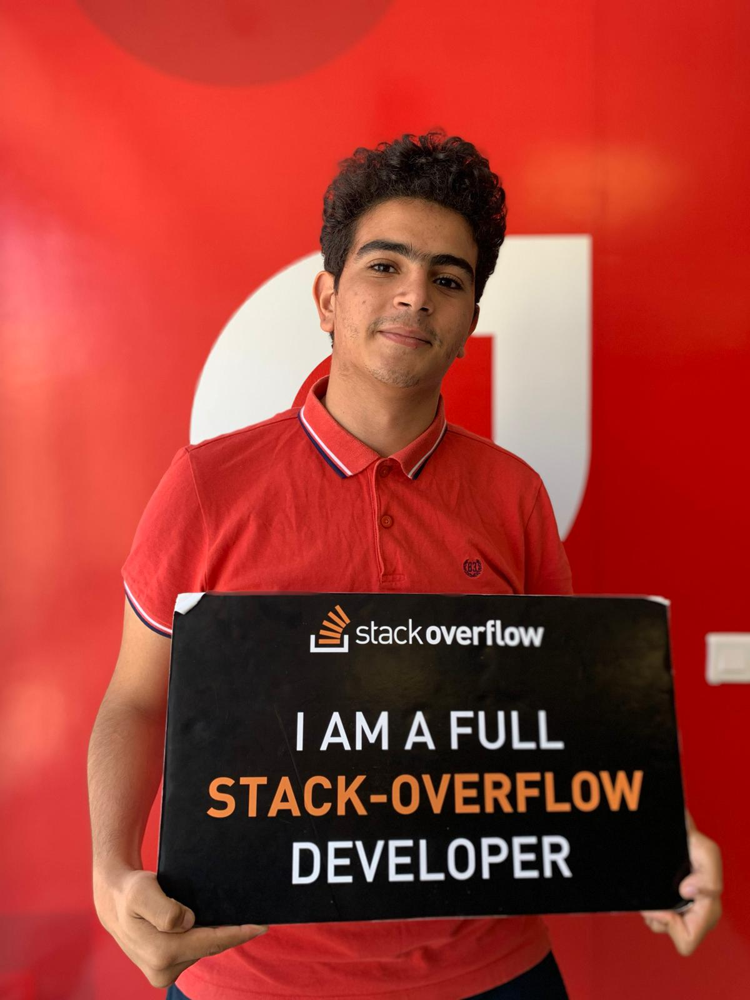
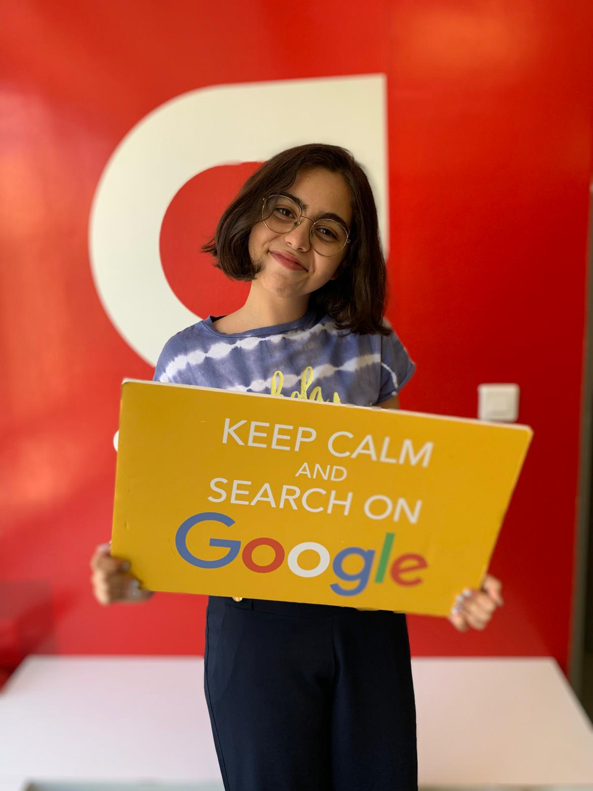

What is Lion?
Lion is a 2016 biographical drama film directed by Garth Davis (in his feature directorial debut) from a screenplay by Luke Davies based on the 2013 non-fiction book A Long Way Home by Saroo Brierley. The film stars Dev Patel, Rooney Mara, David Wenham and Nicole Kidman, as well as Abhishek Bharate, Divian Ladwa, Priyanka Bose, Deepti Naval, Tannishtha Chatterjee, Nawazuddin Siddiqui, and Sunny Pawar. It tells the true story of how Brierley, 25 years after being separated from his family in India, sets out to find them. It is a joint production between Australia and the United Kingdom.
Trailer
L'Histoire Du Film
Suro est un enfant agé de 5 ans qui habite avec sa mère, sa petite soeur et son frere gudo à khandwa en Inde .Guddo et Suro volent le charbon des trains de marchandises pour échanger du lait et de la nourriture. Un jour Suro se trouve seul dans un train qui traverse l Inde vers Callcuta à peu près 1600 km loin de sa ville natale.Le petit doit survivre seul dans cette immense ville. Durant sa journée Suro a rencontré beaucoup de problèmes et des situations dangereuses... Quelques mois plus tard il était recueilli dans un orphelinat et il était adopté par un couple australien . Et la une nouvelle vie l attendait.Mais est ce qui il va rencontrer sa propre famille ? Et comment il a pu surmonter toutes ces embuches ? Imaginez comment un petit garçon pourrait se réveiller et se retrouver dans une autre ville étrangère? Comment il se protège et survit seul et surtout comment pourrait-il prendre les meilleures décisions dans des situations dangereuses ?
The Story Of The Film
Suro a 5 year old child who lives with his mother, his little sister and his brother Gudo in Khandwa in India, Gudo and Suro steal the charbon from the freight trains to exchange milk and food one day. He find himself alone in a train that crosses India to Calcuta 1600 km away from his hometown The little one has to survive alone in this huge city, during his day, Suro encounter many problems and dangerous situations ... After a few months later he was taken in in an orphanage and he was adopted by an Australian couple. And the new life awaited him. but is what will meet his own family? and how he was able to overcome all these pitfalls? Imagine how a little boy could wake up and find himself in another city abroad the way he protect himself and survive alone especially how could he make the best decisions in dangerous situations ?
Awards
| Award | Date of ceromony |
Category | Recepient(s) and nominee (s) | Result |
|---|---|---|---|---|
| ASE Award | Best Editing in a Feature Film | Alexandre de Franceschi | Won | |
| AACTA Awards | 6 December 2017 8 January 2017 |
Best direction and film Best actor Best supporting Actor Best supporting Actress Best Cinematography Best Editing Best Original Music Score Best Sound Best Production Design Best Costume Design Best International Film Best International Direction Best International Supporting Actor Best International Supporting Actress Best International Screenplay |
Iain Canning, Angie Fielder, Emile Sherman Garth Davis Luke Davies Sunny Pawar Nicole Kidman Greig Fraser Alexandre de Franceschi Volker Bertelmann, Dustin O’Halloran James Ashton, Nakul Kamte, Robert Mackenzie, Glenn Newnham, Andrew Ramage, Mario Vaccaro Chris Kennedy Cappi Ireland Lion Garth Davis Dev Patel Nicole Kidman Luke Davies | won won won won won won won won won won won Nominated Nominated won won Nominated |
American Society of Cinematographers |
4 February 2017 | Outstanding Achievement in Cinematography in Theatrical Releases | Greig Fraser | won |
| British Academy Film Awards | 12 February 2017 | Best Actor in a Supporting Role Best Actress in a Supporting Role Best Cinematography Best Film Music Best Adapted Screenplay |
Dev Patel Nicole Kidman Greig Fraser Dustin O'Halloran and Hauschka Luke Davies |
won nominated nominated nominated won |
| Chicago International Film Festival | 27 October 2016 |
Audience Award | Lion | won |
| Hollywood Film Awards | 6 November 2016 |
Hollywood Supporting Actress Award | Nicole Kidman | won |
| Washington D.C. Area Film Critics Associations | 5 December 2016 | Best Youth Performance Best Adapted Screenplay |
Sunny Pawar Luke Davies |
won Nominated |
| Toronto International Film Festival | 18 September 2016 |
People's Choice Award | Lion | 1st Runner-up |
| Location Managers Guild Awards | 8 April 2017 | Outstanding Locations in Contemporary Film | Hugo Cran, Harsh Dave and Sandeep Rudra | Nominated |
| Mill Valley Film Festival | 16 October 2016 |
Overall Audience Favorite | Lion | won |

Achref 47
Hello,I'm Achref and I'm 19 years old boy.
I love playing video game,practising sport.
I study in Russia.
Dont't hesitate to visit our website.
Chaima Mzid
Hello,I'm Chaima and I'm a 16 years old girl.
I love dancing ,singing and playing music.
I study at LPA.
I hope that you like our website.